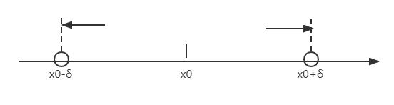

§1.3 函数的极限
一、自变量趋于有限值时函数的极限（x→x0）
1. 定义（ϵ−δ定义）
f(x) 在 U∘(x0,δ′) 处有定义，∀ϵ>0∃δ≤δ′0<∣x−x0∣<ϵ，有A−ϵ<f(x)<A+ϵ成立
- x→x0limf(x)=A⇔∀ϵ>0,∃δ>0,∀x∈U∘(x0,δ′)，有∣f(x)−A∣<ϵ成立
- x→x0limf(x)=A⇔f(x)=A+α(x)，其中x→x0limα(x)=0(无穷小量)
2. 函数极限的性质
与数列极限的性质相似
- 唯一性
- 局部有界性
x→x0limf(x)=A⇔U∘(x0,δ)内函数有界
- 局部保序性
x→x0limf(x)=Ax→x0limg(x)=B若存在δ>0，当x∈U∘(x0,δ)时，恒有f(x)≤g(x)，则有A≤B
- 局部保号性
设x→x0limf(x)=A，若存在δ>0，当x∈U∘(x0,δ)时，恒有f(x)≤/≥0，则有A≤/≥0
- 归结原则
设f(x)在U∘(x0,δ)上有定义，x→x0limf(x)=A⇔任意收敛于x0的数列{xn}(xn=x0)恒有x→x0limf(xn)=A
例
证明 limx→0sinx1 不存在
解：
取 {xn}=2nπ1(xn=0)limn→∞xn=0limn→∞f(xn)=0
取 {xn′}=2nπ+2π1(xn’=0)limn→∞xn′=0limn→∞f(xn′)=1
∵limn→∞f(xn)=limn→∞f(xn′)
∴极限不存在
3. 单侧极限：左/右极限

- 对于 ∀ϵ>0，∃ϵ>0，当 x0<x<x0+ϵ 时，∣f(x)−A∣<ϵ 成立，称 A 为 f(x) 当 x 趋向 x0 时的右极限，记作 x→x0+limf(x)=A 或 f(x0+)=A
- 若当 x0−ϵ<x<x0 时，∣f(x)−A∣<ϵ 成立，称A为 f(x) 当 x 趋向 x0 时的左极限，记作 x→x0−limf(x)=A 或 f(x0−)=A
定理：f(x) 在点 x0 存在极限 ⇔ f(x) 在 x0 的左右极限都存在且相等
二、自变量趋于无穷大时函数的极限（x→∞）
1. 定义
x→∞limf(x)=A⇔∀ϵ>0,∃X>0,当∣x∣>X时,恒有∣f(x)−A∣≤ϵ
2. 几何意义
对于任意 ϵ>0 总存在 X>0，x>X 或 x<−X 时，曲线 y=f(x) 位于 y=A+ϵ 与 y=A−ϵ 之间